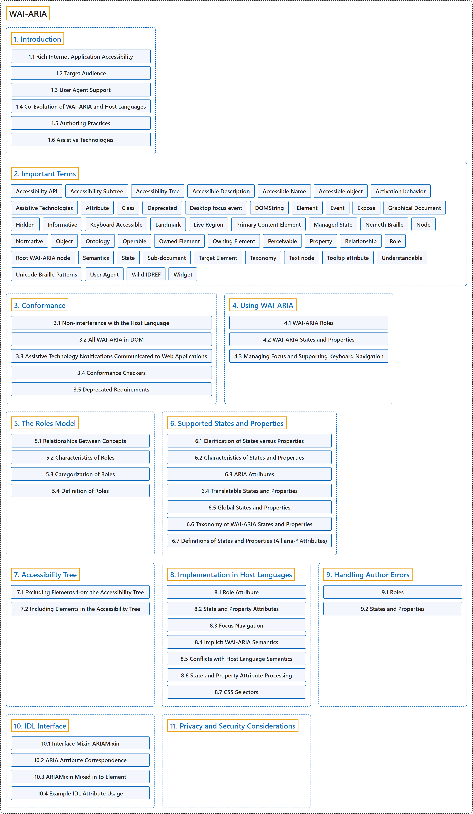

WAI-ARIA
Classification

Glossary
| Term | Definition | 中文翻译 | Source |
|---|---|---|---|
| Accessible Rich Internet Applications (WAI-ARIA) 无障碍富互联网应用 |
"This specification provides an ontology of roles, states, and properties that define accessible user interface elements and can be used to improve the accessibility and interoperability of web content and applications." | 本规范提供一套角色、状态和属性的本体，它们定义无障碍的用户界面元素，并可用于提升网络内容和应用的无障碍性与互操作性。 | World Wide Web Consortium, 2023, Abstract |
| Web Accessibility Initiative (WAI) 网络无障碍倡议 |
"WAI develops strategies, standards, and resources to make the web accessible" | WAI 制定策略、标准和资源，以让网络变得无障碍。 | W3C Web Accessibility Initiative, n.d., "W3C WAI" |
| 1. Introduction 引言 |
"WAI-ARIA is a technical specification that provides a framework to improve the accessibility and interoperability of web content and applications." | WAI-ARIA 是一份技术规范，它提供一个提升无障碍性和互操作性的框架，面向网络内容和应用。 | World Wide Web Consortium, 2023, section 1 |
| 2. Important Terms 重要术语 |
(context) "While some terms are defined in place, the following definitions are used throughout this document." | （语境）虽然有些术语就地定义，但下列定义，在整份文档中通用。 | World Wide Web Consortium, 2023, section 2 |
| 3. Conformance 一致性 |
(context) "The main content of Accessible Rich Internet Applications is normative and defines requirements that impact conformance claims." | （语境）Accessible Rich Internet Applications 的主要内容是规范性的，并规定影响一致性声明的要求。 | World Wide Web Consortium, 2023, section 3 |
| 4. Using WAI-ARIA 使用 WAI-ARIA |
"WAI-ARIA divides the semantics into roles (the type defining a user interface element) and states and properties supported by the roles." | WAI-ARIA 把语义分为角色（定义用户界面元素的类型），以及角色所支持的状态和属性。 | World Wide Web Consortium, 2023, section 4 |
| 5. The Roles Model 角色模型 |
"This section defines WAI-ARIA roles and describes their characteristics and properties." | 本节定义 WAI-ARIA 角色，并描述它们的特征和属性。 | World Wide Web Consortium, 2023, section 5 |
| 6. Supported States and Properties 支持的状态和属性 |
"Both provide specific information about an object, and both form part of the definition of the nature of roles." | 两者都提供关于对象的具体信息，也都是角色性质定义的一部分。 | World Wide Web Consortium, 2023, section 6 |
| 7. Accessibility Tree 无障碍树 |
"The accessibility tree and the DOM tree are parallel structures." | 无障碍树和 DOM 树是平行的结构。 | World Wide Web Consortium, 2023, section 7 |
| 8. Implementation in Host Languages 在宿主语言中的实现 |
(context) "This section discusses how host languages are to implement WAI-ARIA, to ensure that the markup specified here will integrate smoothly and effectively with the host language markup." | （语境）本节讨论宿主语言应如何实现 WAI-ARIA，以确保这里规定的标记能与宿主语言的标记顺畅而有效地集成。 | World Wide Web Consortium, 2023, section 8 |
| 9. Handling Author Errors 处理作者错误 |
(context) "User agents are expected to perform validation of WAI-ARIA roles." | （语境）用户代理应当对 WAI-ARIA 角色进行验证。 | World Wide Web Consortium, 2023, section 9 |
| 10. IDL Interface IDL 接口 |
(context) "Conforming user agents MUST implement the following IDL interface." | （语境）符合规范的用户代理必须实现下列 IDL 接口。 | World Wide Web Consortium, 2023, section 10 |
| 11. Privacy and Security Considerations 隐私与安全考虑 |
(context) "This specification introduces no new security considerations." | （语境）本规范没有引入新的安全考虑。 | World Wide Web Consortium, 2023, section 11 |
References
W3C Web Accessibility Initiative. (n.d.). About W3C WAI. Retrieved November 9, 2026, from https://www.w3.org/WAI/about/
World Wide Web Consortium. (2023, June 6). Accessible Rich Internet Applications (WAI-ARIA) 1.2 (W3C Recommendation). https://www.w3.org/TR/wai-aria-1.2/